Questão 1 · Endocrinologia · 4000183685Em casos de hipotireoidismo, dos achados abaixo o mais provável de ser encontrado é
A Aumento:
B Aumento:
C Aumento:
D Aumento:
E Aumento:
Questão 2 · Neurologia · Hipertensão Intracraniana · 4000183684São avaliados cinco pacientes com rebaixamento de nível de consciência. Identi cam-se disnatremias, alterações na gasometria e na ressonância magnética de crânio. O indivíduo com maior probabilidade de apresentar o edema cerebral mais intenso é o que apresenta
A Sódio Sérico (mEq/L):
B Sódio Sérico (mEq/L):
C Sódio Sérico (mEq/L):
D Sódio Sérico (mEq/L):
E Sódio Sérico (mEq/L):
Questão 3 · Hidroxiureia · 4000183683Hidroxiureia será prescrita com maior probabilidade ao paciente com o seguinte histórico:
A Mulher, 40 anos, anemia crônica e HbA2 > 4%.
B Mulher, 24 anos, necrose asséptica de cabeça femural e síndrome torácica aguda.
C Homem, 35 anos, pancitopenia, DHL elevado e hipersegmentação de neutrófilos.
D Mulher, 30 anos, poliartite, proteinúria e anticorpo anti-Sm.
E Homem, 65 anos, fratura vértebra lombar L2 e hipergamaglobulinemia.
Questão 4 · Cilindros · Nef rologia · Exame de urina · 4000183682Foram avaliados 5 pacientes com diferentes formas de nefropatia. A análise do exame de urina mostrou diferentes formas de cilindrúria, cujo significado clínico mais provável é
A Cilindros:
B Cilindros:
C Cilindros:
D Cilindros:
E Cilindros:
Questão 5 · Inf ectologia · 4000183681Paciente diabético e hipertenso apresenta queda do estado geral. Na investigação é feito fundo de olho que mostra hemorragias retinianas próximas ao disco óptico caracterizando manchas de Roth. O mais indicado é realizar
A anti-HIV + VDRL.
B doppler
C ressonância magnética de encéfalo + líquor.
D ecocardiograma + hemoculturas.
E coagulograma + fator antinuclear (FAN).
Questão 6 · Endocrinologia · 4000183680Considere os quatro achados ultrassonográficos na avaliação de nódulo tireoidiano: I. Hipoecogenicidade. II. Calcificações ininterruptas (“casca de ovo”). III. Formato mais alto que largo. IV. Aparência espongiforme. Representam aumento de risco de câncer, APENAS
A I e IV.
B I e II.
C II e III.
D II e IV.
E I e III.
Questão 7 · Inf ectologia · 4000183679A principal intervenção visando à profilaxia da infecção por Influenza consiste na administração de
A oseltamivir.
B vacina contra o vírus Influenza.
C peramivir.
D zanamivir.
E baloxavir.
Questão 8 · Doença de von Willebrand · 4000183678Foram analisados 100 pacientes com síndrome de von Willebrand adquirida. Em 48 destes pacientes haverá com maior probabilidade a presença de doença
A cardiovascular.
B tireoidiana.
C mieloproliferativa.
D linfoproliferativa.
E autoimune.
Questão 9 · Cef aleias Secundárias · Acidente Vascular Cerebral Hemorrágico · 4000183677Acidentes Vasculares Cerebrais AVC Considere a frequência de alguns sintomas em três subtipos de acidente vascular cerebral: Hemorragia intraparenquimatosa, isquemia cerebral e hemorragia subaracnoide correspondem, respectivamente, aos subtipos
A ,
B ,
C , e
D , e
E , e .
Questão 10 · Fatores desencadeantes · 4000183676Em relação à amônia, o aumento da produção, absorção ou da sua entrada no cérebro podem precipitar encefalopatia hepática em cirróticos. Tal fato associa-se a fatores como obstipação, hemorragia gastointestinal,
A acidose metabólica e hipocalemia.
B acidose mista e hipocalemia.
C acidose metabólica e hipercalemia.
D alcalose metabólica e hipocalemia.
E alcalose metabólica e hipercalemia.
Questão 11 · Glomerulonef rite rapidamente progressiva · Nef rologia · As grandes síndromes glomerulares · 4000183675Situações variadas como infecção por HIV, doença de Still, hemofagocitose, uso de bifosfonatos e transplante renal estão associadas à seguinte nefropatia:
A Amiloidose renal.
B Nefropatia mesangial.
C Glomerulonefrite membranoproliferativa.
D Nefropatia de lesões mínimas.
E Glomerulopatia colapsante.
Questão 12 · Inf ectologia · 4000183674Mulher de 30 anos, na 10ª semana de gestação, proveniente do Japão, procura atenção médica por apresentar febre, dor abdominal e diarreia com muco e sangue há 1 dia. Está no Brasil há 10 dias, visitando parentes no Pará. Apresenta sinais de desidratação leve, hemodinamicamente estável, ausculta cardíaca e pulmonar normais; o abdome é ácido, com ruídos hidroaéreos aumentados, doloroso à palpação do trajeto colônico, sem sinais de irritação peritoneal. Após melhora clínica com hidratação parenteral e sintomáticos o médico decide por tratamento domiciliar com introdução de terapia oral. A escolha mais adequada é
A gatifloxacina.
B sulfametoxazol-trimetoprim.
C azitromicina.
D levofloxacina.
E mebendazol.
Questão 13 · Inf ectologia · Quadro clínico · 4000183673Nas endocardites infecciosas podem surgir sinais bastante característicos entre os quais NÃO se incluem:
A pápulo-pústulas em polpas digitais.
B manchas cutâneas róseas, com bordas definidas e centro pálido, evanescentes, não pruriginosas, principalmente no tronco.
C petéquias em extremidades e palato.
D pequenas hemorragias em farpas subungueais.
E máculas palmo-plantares.
Questão 14 · Reumatologia · Vasculite crioglobulinêmica · 4000183672Mulher de 38 anos desenvolve artralgia, púrpura e fraqueza por meses tendo sido diagnosticada com síndrome de crioglobulinemia mista. A causa mais comum desta síndrome é
A dermatomiosite/polimiosite.
B lúpus eritematoso sistêmico.
C tuberculose pulmonar.
D hepatite C.
E linfoma de Hodgkin.
Questão 15 · Abscesso pulmonar · 4000183671Homem de 42 anos, com alcoolismo grave, vivendo em situação precária de higiene, procura o pronto-socorro com queixa de febre, sudorese noturna, cansaço, anorexia, emagrecimento e tosse produtiva há 1 semana. Está toxemiado, emagrecido, dentes em mau estado, taquipneico, PA: 108 × 68 mmHg, pulso no: 98 bpm, saturando 94% em ar ambiente; tem estertores nos e grosseiros no 1/3 inferior do pulmão direito, sem outras alterações significativas. Imagens dos pulmões a seguir. O tratamento empírico deve incluir, necessariamente, cobertura contra
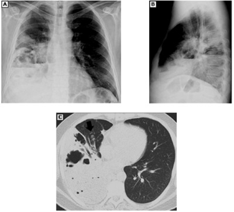
A bacilo de Koch.
B fungos.
C S.aureus.
D Pseudomonas aeruginosa.
E anaeróbios.
Questão 16 · Tratamento da Hipertensão arterial · 4000183670O tratamento de hipertensão arterial sistêmica tem como objetivo a diminuição do risco cardiovascular do paciente. O principal determinante na busca desse objetivo é
A iniciar o tratamento com 2 anti-hipertensivos, sendo um deles um diurético.
B a utilização de pelo menos uma droga capaz de diminuir a pressão arterial e exercer efeito cardioprotetor.
C a utilização inicial de medicação capaz de inibir a enzima de conversão da angiotensina.
D diminuição da pressão arterial até a meta previamente determinada.
E iniciar o tratamento com medicação capaz de realizar a diminuição da resistência arterial periférica bloqueando canais de cálcio.
Questão 17 · Tratamento f armacológico da insuf iciência cardíaca com f ração de ejeção reduzida · Cardiologia · 4000183669Quadro clínico Mulher de 46 anos portadora de lúpus eritematoso sistêmico em remissão, atualmente no processo de retirada de prednisona, tomando 10 mg em dias alternados, é atendida no pronto-socorro com queixa de dor precordial de natureza progressiva há cerca de 6 horas. O exame físico não mostra alterações significativas. O eletrocardiograma realizado na sala de emergência é mostrado abaixo: O diagnóstico mais provavelmente é de
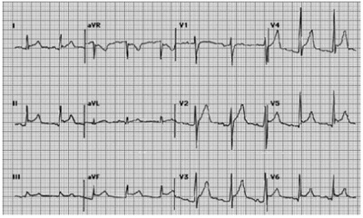
A pericardite aguda.
B infarto agudo do miocárdio em área inferior.
C infarto antigo do miocárdio em ventrículo direito.
D infarto agudo do miocárdio em parede lateral.
E distúrbio de condução no ramo direito.
Questão 18 · Reumatologia · Gota · 4000183668NÃO é droga que pode ser utilizada com a nalidade de promover a diminuição da concentração plasmática de ácido úrico:
A Alopurinol.
B Benzobromarona.
C Colchicina.
D Febuxostat.
E Probenecida.
Questão 19 · Inf ectologia · 4000183667Paciente de 36 anos sem comorbidades significativas desenvolve pneumonia adquirida na comunidade. Uma coleta adequada de secreção traqueal detecta provavelmente, a
A uso endovenoso de drogas ilícitas.
B surtos em escolas ou comunidades fechadas.
C vacinação recente contra Influenza.
D sinusopatia aguda.
E infecção recente por Influenza.
Questão 20 · Inf arto de ventriculo direito · Cardiologia · 4000183666Homem de 64 anos, diabético, em uso de daglifozina, procura atendimento de urgência por dor precordial intensa há 1 hora; está hemodinamicamente estável, com ausculta cardíaca e pulmonar normais, sem outros achados significativos. O ECG e o ecocardiograma mostram alterações típicas de infarto agudo do miocárdio de ventrículo direito, com elevação do segmento ST. Nas primeiras 24-48 horas deve ser empregado com cautela, ou mesmo evitado, o uso de
A ácido acetilsalicílico.
B nitratos.
C inibidor de P2Y12.
D heparina de baixo peso molecular.
E betabloqueadores.
Questão 21 · Trauma Abdominal Fechado · Cirurgia · 4000183665Vítima de colisão de moto versus automóvel, um rapaz de 22 anos foi projetado contra um poste. Deu entrada na sala de emergência com fratura de bacia e laceração perineal extensa, acometendo inclusive a borda anal. Pulso: 112 bpm, PAS: 86 mmHg, SatO₂: 100%, com máscara de O₂. Glasgow: 14. Nesse caso,
A se for identificada ou fortemente suspeitada fratura de bacia em livro aberto, deve-se estabilizar a pelve com lençol na altura das cristas ilíacas.
B tem indicação de transfusão maciça, devido ao
C requer-se controle imediato da via aérea, com indicação de sedação e intubação orotraqueal como primeira prioridade.
D há indicação de manutenção de valores de pressão arterial sistólica acima de 110 mmHg, por causa da lesão cerebral traumática.
E tem trauma pelviperineal complexo, com indicação imediata de controle de sangramento e de contaminação, em centro cirúrgico.
Questão 22 · Cirurgia · 4000183664Uma senhora de 77 anos de idade, hipertensa, dislipidêmica e tabagista de 1 maço/dia há 60 anos, tem antecedente de infarto agudo do miocárdio há 2 anos. Apresentou dor abdominal súbita, de grande intensidade, seguida de síncope, há 1 hora. No momento, está estável e sem dor. Ao exame clínico, palpa-se massa abdominal pulsátil. Fez a angiotomogra a ilustrada. A conduta ideal para esta senhora é:
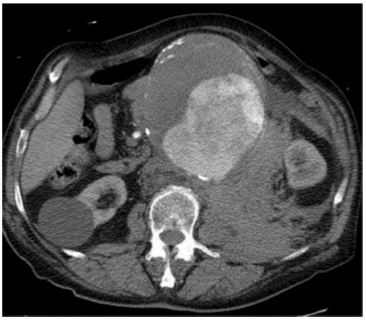
A Operação eletiva, após estratificação do risco clínico e cardiológico.
B Operação de urgência.
C Controle das doenças de base e repetição do exame em 6 meses.
D Tratamento com fluoroquinolona, por via oral, por 2 semanas.
E Anticoagulação com heparina em dose plena.
Questão 23 · Diagnóstico · Cirurgia · Úlceras arteriais · 4000183663Uma mulher de 65 anos de idade tem úlcera dolorosa sobre o maléolo medial da perna direita há 4 meses. A úlcera é super cial e tem granulação pálida e secreção serosa. Tem ainda edema significativo da extremidade. A úlcera vem aumentando de diâmetro, a despeito do uso de bota de Unna. O índice tornozelo-braquial (ITB) esquerdo é 0,3. Qual deve ser o próximo passo no manejo desta paciente?
A Enxerto de pele parcial cobrindo a úlcera.
B Safenectomia interna direita com ligadura das veias perfurantes.
C Continuar com o uso de bota de Unna.
D Angiotomografia arterial do membro inferior direito.
E Administração de antibióticos por via oral.
Questão 24 · Apresentação Clínica e Diagnóstico · Cirurgia · Tratamento · 4000183661Um menino de 2 meses de idade é levado ao ambulatório pelos pais, que notaram alteração no posicionamento do meato uretral e dizem que a criança tem bom jato urinário. Na avaliação, percebe-se hipospádia coronal e testículos tópicos. A respeito do problema desta criança, é INCORRETO:
A A correção da hipospádia distal tem complicações em até 10% dos procedimentos.
B É possível conseguir a correção adequada desta hipospádia com um único procedimento.
C É mandatória a realização de cariótipo.
D A idade ideal para o reparo cirúrgico é entre 6 e 18 meses.
E Deve-se avaliar a presença de curvatura peniana no intraoperatório, corrigindo se necessário.
Questão 25 · Gastroenterologia · 4000183659Uma mulher de 38 anos de idade foi atendida no pronto-socorro por dor abdominal com 3 dias de evolução. Ao exame, estava desidratada, taquicárdica, taquipneica e com muita dor à palpação do andar superior do abdome. Amilase de entrada: 1.300 UI/L; leucócitos: 19.000/mm³; creatinina: 1,9 mg/dL. PCR: 383 mg/L. A gasometria de entrada mostrava acidose metabólica e hipoxemia. Está oligúrica. Pressão intra-abdominal: 10 mmHg. A propósito do quadro desta paciente, é correto afirmar:
A Tem síndrome compartimental, com indicação de peritoniostomia.
B Está indicada tomografia precoce.
C Trata-se de pancreatite aguda de origem biliar.
D Tem indicação de necrosectomia de urgência.
E Trata-se de pancreatite aguda grave.
Questão 26 · Quadro Clínico e Indicações de Tomograf ia de Crânio · Neurologia · Traumatismo Craniencef álico · 4000183657Considerando os pacientes traumatizados que podem ter lesão cerebral traumática, assinale a alternativa que indica uma situação em que NÃO é necessário fazer tomografia computadorizada de crânio:
A Paciente do sexo masculino, 9 meses, choroso e muito irritado, que caiu do colo da mãe, tendo ficado hipotônico por mais de meia hora e já vomitou algumas vezes.
B Paciente do sexo feminino, 45 anos, vítima de capotamento, Glasgow 15 o tempo todo, sempre estável hemodinamicamente; um passageiro do mesmo carro faleceu no local.
C Paciente do sexo feminino, 18 anos, Glasgow 15, vítima que de queda de motocicleta há cerca de 12 horas.
D Paciente de 25 anos, sexo masculino, Glasgow 14, que fez uso de álcool nas duas horas antes do evento traumático.
E Paciente do sexo masculino, 75 anos, que faz uso de clopidogrel, caiu da própria altura e tem Glasgow 15.
Questão 27 · Choque Neurogênico · 4000183654Um homem de 66 anos de idade, vítima de capotamento, foi ejetado do veículo. A via aérea está pérvia e sua ventilação é super cial, com FR: 18 irpm. Pulso: 54 bpm, regular, PA: 79 × 53 mmHg. O abdome é ácido e a pelve estável. Tem força grau IV em membros superiores e paraplegia ácida em membros inferiores. A sensibilidade está preservada até a cicatriz umbilical. Ao toque retal, o esfíncter é hipotônico. O reflexo bulbocavernoso está ausente. Tomogra a de coluna: fratura em processos espinhosos de C3, C4 e C5, com desalinhamento cortical; fratura no aspecto anterior de C6, bem como em suas massas laterais, estendendo-se aos processos transversos e processos articulares superiores. O diagnóstico que já pode ser feito para este paciente é:
A Lesão incompleta de medula ao nível de T10.
B Síndrome de Brown-Séquard.
C Lesão completa de medula a nível cervical.
D Síndrome medular anterior.
E Choque neurogênico.
Questão 28 · Conduta e Tratamento · História Clínica e Exame f ísico · Diagnóstico e Exames Complementares · 4000183653Um senhor de 55 anos de idade, tabagista, com bom estado nutricional, foi submetido a cirurgia de Hartmann, por diverticulite aguda de sigmoide perfurada, com peritonite fecal. A cavidade abdominal foi lavada com soro siológico e fechada com pontos subtotais internos de poligalactina número 1, sutura contínua. No quinto dia de pós-operatório, estava taquicárdico, taquipneico, febril, prostrado e permanecia em íleo adinâmico, com náuseas, vômitos e distensão abdominal. Estava ainda recebendo ceftriaxona e metronidazol. Fez a tomogra a de abdome ilustrada, pensando em deiscência do coto do reto. A melhor conduta neste momento é
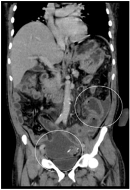
A reoperação.
B punção das coleções, guiada por imagem.
C cateter central e nutrição parenteral.
D troca de antibiótico para meropenem e vancomicina.
E observação e nova tomografia em 48 horas.
Questão 29 · Quadro Clínico · Tratamento · Neurologia · 4000183651Uma senhora de 85 anos de idade está no 2º pós-operatório de colecistectomia laparoscópica por colecistite aguda co m empiema, perfurada e bloqueada. A operação não teve intercorrências. A paciente passou a apresentar confusão mental, alucinações e agitação. Pulso: 80 bpm, regular, PA: 120 × 70 mmHg. T: 36,5 °C, SatO₂: 98%, em ar ambiente. O exame do abdome revela um pouco de dor em hipocôndrio direito. Está em uso de ceftriaxona, losartana, metformina, rosuvastatina, alopurinol e hidroclorotiazida. A conduta diante do diagnóstico mais provável deve ser
A ampliação da antibioticoterapia para incluir imipenem.
B reavaliar as medicações e procurar distúrbios hidroeletrolíticos.
C anticoagulação plena.
D AAS.
E suspensão da ceftriaxona.
Revisar: possível letra faltando em enunciado
Questão 30 · Trauma da Bexiga · 4000183650Uma senhora de 33 anos de idade, no quinto pós-operatório de cesariana, vai ao pronto-socorro com queixa de dor abdominal de forte intensidade desde a alta, há 2 dias. Não teve melhora com uso de dipirona, tramadol e simeticona. Vem até piorando. Refere aumento do volume abdominal. Diz ter sido submetida a sondagem vesical de demora no pós- operatório da cesariana. Antecedentes cirúrgicos: apendicectomia e miomectomia. Está em bom estado geral, corada, hidratada, acianótica, anictérica e afebril, mas um pouco taquipneica. Pulso: 96 bpm, PA: 140 × 90 mmHg, FR: 20 irpm, SatO₂: 96%. O abdome é globoso e distendido, sendo difusamente doloroso. Em quadrante inferior esquerdo parece até esboçar descompressão brusca positiva. O útero é palpável 2 cm abaixo da cicatriz umbilical. No exame especular, não se vê sangramento ativo. Toque vaginal: colo fechado, indolor à mobilização, anexos livres. Hemoglobina: 11,3 g/dL, hematócrito: 34,2%, leucócitos: 10.670/mm³, plaquetas: 399.000/mm³, PCR: 97 mg/L, ureia: 76 mg/dL, creatinina: 4,14 mg/dL, Na A principal hipótese diagnóstica é
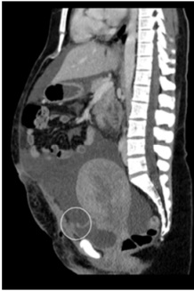
A lesão de bexiga intraperitoneal.
B lesão de bexiga extraperitoneal.
C infecção puerperal.
D lesão iatrogênica de delgado.
E corpo estranho retido (
Questão 31 · Hérnia Inguinal · 4000183649Um senhor de 77 anos de idade vai ao pronto-socorro queixando-se de constipação intestinal há 12 dias. Refere ter dor abdominal em cólica, mas recusa-se a ser examinado completamente. Trouxe a tomogra a que fez em outro serviço 1 dia antes de sua vinda ao pronto-socorro, ilustrada a seguir. A respeito do diagnóstico mais provável deste senhor, é correto afirmar:
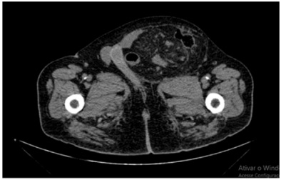
A É necessário fazer correlação com a ultrassonografia, para avaliar a viabilidade das alças intestinais.
B A ausência de líquido no saco herniário exclui a possibilidade de sofrimento de alças.
C Trata-se de hérnia femoral, que é mais frequente no sexo masculino.
D Trata-se de hérnia inguinal esquerda, sendo a causa provável da obstrução intestinal.
E A imagem ilustrada é um achado tomográfico muito frequente, sem relevância clínica.
Questão 32 · Trombose Venosa · Cirurgia · 4000183648Mulher de 32 anos de idade procura o pronto-socorro por dor abdominal há 14 dias, com piora após qualquer alimentação. Tem antecedentes de lúpus eritematoso sistêmico, que trata com corticoide por via oral. Nega febre. Refere estar mais constipada. Pulso: 90 bpm, regular, PA: 110 × 80 mmHg. O abdome é um pouco doloroso, difusamente. Não tem sinais inequívocos de irritação peritoneal. A tomogra a de abdome mostra distensão de delgado e sinais de trombose venosa aguda. A melhor abordagem na urgência é
A Enoxaparina.
B Clopidogrel.
C Warfarina.
D Papaverina.
E Laparoscopia.
Questão 33 · Cirurgia · 4000183647Uma paciente 20 anos de idade vem ao pronto-socorro com quadro de distensão abdominal, empachamento, náuseas e dor abdominal difusa, sem fatores de melhora ou piora, em cólica, há 3 dias. Fez uso de cetoprofeno, sem melhora. Queixa- se de parada de eliminação de fezes e de atos desde início do quadro. Nega febre ou calafrios. Antecedentes: correção de atresia de esôfago com 45 dias de vida; laparotomia exploradora com 13 anos de idade, por obstrução intestinal. Está em regular estado geral, descorada +/4, desidratada ++/4, acianótica, afebril e anictérica. O abdome está distendido e timpânico e doloroso à palpação. Não tem sinais de irritação peritoneal. Os ruídos hidroaéreos estão diminuídos. Exames laboratoriais: hemoglobina: 14,2 g/dL, hematócrito: 43,8%, leucócitos: 11.540/mm³, plaquetas: 275.000/mm³, INR: 1,08, R: 0,86, PCR: 53 mg/L, ureia: 23 mg/dL, creatinina: 0,73 mg/dL, Na fosfatase alcalina: 55 U/L, Gama-GT: 22 U/L, amilase: 51 U/L, lipase: 20 U/L, glicemia: 123 mg/dL. Foi passada sonda gástrica e recebeu hidratação venosa. Fez a radiografia de abdome ilustrada a seguir, por indisponibilidade de tomografia no momento. Qual é a conduta que deve ser adotada?
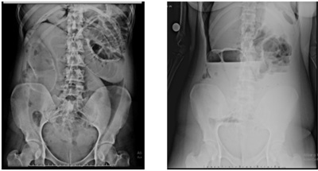
A Trânsito intestinal.
B Antibiótico intravenoso.
C Transferência para hospital que tenha tomografia.
D Tratamento clínico por 48 horas.
E Tratamento cirúrgico imediato (laparotomia ou laparoscopia).
Questão 34 · Principais Causas de Abdome Agudo Hemorrágico · Cirurgia · Manif estações Clínicas e Exame Físico · 4000183646Uma puérpera 32 anos de idade procura o pronto-socorro com queixa de fraqueza, sonolência, náuseas e dor abdominal súbita. Nega antecedentes médicos significativos. Está em bom estado geral, mas descorada. Pulso: 110 bpm, regular. PA: 90 × 50 mmHg. Após reanimação volêmica, o pulso é 95 bpm. O abdome está distendido e é doloroso difusamente. Não tem sinais de irritação peritoneal. A tomogra a mostra grande quantidade de líquido livre e aneurisma esplênico, com pequeno extravasamento arterial de contraste. A melhor conduta de urgência é:
A Ligadura da artéria esplênica por videolaparoscopia.
B Ligadura da artéria esplênica por laparotomia.
C Esplenectomia por videolaparoscopia.
D Embolização arterial.
E Esplenectomia por via aberta.
Questão 35 · Tratamento Cirúrgico Quando Indicar · Exames Complementares · Cirurgia · 4000183645Uma senhora de 81 anos de idade está internada há 5 dias em tratamento de choque séptico, por pneumonia aspirativa. Teve necessidade de ventilação mecânica, diálise e droga vasoativa. Hoje, apresentou distensão abdominal e piora hemodinâmica e da função renal. O ultrassom mostrou vesícula biliar distendida, com paredes espessadas e cálculo impactado no infundíbulo. Leucócitos: 18.500/mm³. Amilase: 100 U/L, bilirrubina total: 2,5 mg/dL, TGO: 100 U/L, FA: 250 U/L. A abordagem deve ser:
A CPRE (colangiopancreatografia retrógrada endoscópica).
B Colecistostomia guiada por ultrassom.
C Colecistectomia aberta.
D Colecistectomia por laparoscopia.
E Antibioticoterapia exclusiva.
Questão 36 · Fasciíte necrotizante · Cirurgia · 4000183644Um homem de 63 anos de idade, diabético e obeso, deu entrada no pronto-socorro com queixa de dor e hiperemia em incisão de inguinotomia. Há 1 semana, foi operado para correção eletiva de hérnia inguinal direita. No 4º pós-operatório, passou a apresentar febre de 38 ºC, hiperemia e dor no local da operação. Ao exame: hiperemia e abaulamento na inguinotomia, que se estende para o períneo, com pontos de necrose e crepitação à palpação da área. Leucócitos: de 25.300/mm³, creatinina: 2,1 mg/dL. Além da reanimação volêmica e antibioticoterapia, a melhor conduta para tratar este paciente é
A retirada de pontos da inguinotomia e colostomia para desvio do trânsito intestinal.
B associação de antifúngico e controle rigoroso da glicemia.
C retirada de pontos de inguinotomia, para drenagem.
D desbridamento cirúrgico amplo de toda a área comprometida.
E oxigenoterapia hiperbárica.
Questão 37 · Tratamento · Cirurgia · 4000183643Um homem de 28 anos de idade, pedreiro, foi vítima de atropelamento. Na emergência, após reanimação volêmica com cristaloide e sangue, mantém instabilidade hemodinâmica. Como o FAST ( foi claramente positivo, é indicada laparotomia de emergência. No intraoperatório, foi achado grande hemoperitônio e lesão hepática extensa, envolvendo os segmentos V, VI e VII com sangramento ativo, que melhorava com a manobra de Pringle. O paciente continua com instabilidade hemodinâmica. A conduta que deve ser tomada é:
A Tamponamento (“
B Shunt
C Hepatectomia não regrada.
D Hepatectomia regrada.
E Sutura com fio absorvível e gaze hemostática.
Questão 38 · Complicações · Cirurgia · 4000183642Um homem de 34 anos de idade foi submetido a gastroplastia com No 1º pós-operatório, por rotina, foi feito o teste de azul de metileno pela enfermeira, que contactou o cirurgião ao notar a urina muito esverdeada do paciente. O paciente tem dor abdominal 3 em 10, na escala analógica decimal, sem peritonismo. Temperatura: 36,5 ºC, pulso: 92 bpm, PA: 110 × 80 mmHg. Não tem náuseas. A conduta deve ser:
A Avaliação abdominal por nova laparoscopia.
B Esofagograma com contraste iodado.
C Iniciar dieta oral líquida, fracionada.
D Jejum e observação clínica.
E Tomografia com contraste oral e venoso.
Questão 39 · Complicações Gastrointestinais · Cirurgia · 4000183641Uma mulher de 34 anos de idade foi operada por colecistite aguda. No intraoperatório, a colangiogra a mostrou coledocolítiase, tratada com exploração e retirada de dois cálculos com 2º pós-operatório, com boa aceitação alimentar, deambulando, afebril e anictérica. O débito do dreno foi 300 mL de secreção biliosa em 24 horas. A conduta, neste momento, deve ser
A colangiografia pelo Kehr.
B monitorização clínica.
C retirar o dreno.
D manter o dreno aberto por mais 10 dias.
E fechar o dreno.
Questão 40 · Proctologia · Cirurgia · 4000183640Rapaz de 18 anos de idade procura a urgência por abscesso em dorso, na linha mediana, próximo da fenda interglútea. Refere antecedente de drenagem na mesma topogra a, há 1 ano. A coleção possui cerca de 4 cm e está bem delimitada. A abordagem neste momento deve ser
A ressecção em centro cirúrgico.
B antibioticoterapia e corticoide oral.
C drenagem à beira-leito.
D drenagem guiada por ultrassom.
E aspiração de conteúdo para cultura e antibioticoterapia.
Questão 41 · Impetigo bolhoso · Dermatologia · 4000183639Recém-nascido de termo, nascido por via vaginal, com 6 dias de vida, apresenta lesões no corpo há um dia. Ao exame apresenta estar em bom estado geral com lesões bolhosas de até 1 cm de diâmetro, de paredes nas, ácidas, com conteúdo amarelado, em face, pescoço, região periumbilical e períneo. Dentre os seguintes agentes etiológicos, o mais provável neste caso é:
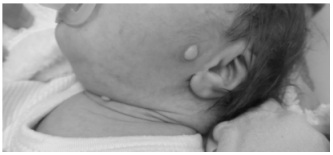
A Neisseria gonorrhoeae.
B Chlamydia trachomatis.
C Streptococcus agalactiae.
D Staphylococcus aureus.
E Estreptococos
Questão 42 · Suporte Avançado de Vida · 4000183638Uma criança de 3 anos de idade, vitima de atropelamento, é levada ao PS, inconsciente. Dois médicos plantonistas iniciam o atendimento, garantindo as vias aéreas e realizando as compressões torácicas. As compressões torácicas recomendadas pela American Heart Association
A 1/2 do diâmetro anteroposterior e deve-se manter relação compressão: ventilação de 30:2.
B 1/2 do diâmetro anteroposterior e deve-se manter o ritmo 20 a 30 respirações/min.
C 1/3 do diâmetro anteroposterior e deve-se manter relação compressão: ventilação de 30:2.
D 1/3 do diâmetro anteroposterior e deve-se manter o ritmo de 30 a 40 respirações/min.
E 1/3 do diâmetro anteroposterior e deve-se manter o ritmo de 20 a 30 respirações/min.
Questão 43 · Síndrome do desconf orto respiratório do RN SDR ou Doença da Membrana Hialina DMH · 4000183637Recém-nascido, 35 semanas de idade gestacional, parto cesáreo por indicação materna, Apgar de 6 e 8 no primeiro e quinto minutos. Com 10 minutos de vida, após realização dos procedimentos de reanimação, inicia desconforto respiratório com taquipneia, gemido expiratório, leve retração subcostal e intercostal, batimento de asa de nariz e cianose. Saturação de oxigênio pré-ductal: 90%, FC: 115: bpm e FR: 78 irpm. Entre as seguintes condutas, a melhor para este paciente neste momento é:
A dar início a VPP com balão e máscara com FR: 40-60 irpm.
B IOT e ventilação mecânica com baixos níveis de pressão.
C indicar suporte respiratório com pressão contínua nas vias aéreas.
D iniciar oferta de oxigênio por via inalatória.
E administrar surfactante exógeno até a primeira hora de vida.
Questão 44 · Exame f ísico do Recémnascido · 4000183636Recém-nascido a termo, lho de pais negros, pré-natal sem intercorrências, sorologias de primeiro e terceiro trimestres sem alterações, parto cesárea por macrossomia fetal. Ao nascimento apresentou lesões vésico-pustulosas em face, tronco, membros e até mesmo em palmas e plantas. O restante do exame físico do paciente era normal. Entre as opções abaixo, o diagnóstico mais provável para esse recém-nascido é:
A melanose pustulosa neonatal.
B candidíase congênita.
C eritema tóxico neonatal.
D escabiose neonatal.
E impetigo neonatal.
Questão 45 · Hipertensão pulmonar persistente HPP · 4000183635Neonato, nascido de parto cesárea por macrossomia fetal e diabetes materna, 38 semanas de idade gestacional, peso: 4.020 g e Apgar: 8/9 e encaminhado ao Alojamento conjunto. Com 4 horas de vida desenvolve quadro de desconforto respiratório, labilidade de oxigenação e cianose progressiva sendo transferido para UTI e colocado em ventilação mecânica. A ausculta cardíaca evidencia uma hiperfonese da segunda bulha, sem sopros. Entre os seguintes diagnósticos, o mais provável para este recém-nascido é:
A síndrome de aspiração meconial.
B hipertensão pulmonar persistente neonatal.
C persistência do canal arterial.
D síndrome do desconforto respiratório.
E taquipneia transitória do recém-nascido.
Questão 46 · Teste do coraçãozinho · 4000183634Recém-nascido de parto normal, IG: 40 semanas, peso: 3.480 g, e Apgar: 9 e 10 encontra-se com 42 horas de vida em alojamento conjunto e aleitamento materno exclusivo. É submetido ao teste da oximetria que resulta: membro superior direito: 98% e membro inferior: 93%. O teste é repetido após 1 hora e obtém-se membro superior direito: 98% e membro inferior: 92%. Entre os seguintes planos terapêuticos, o melhor para esse neonato é:
A esperar internado avaliação do cardiologista em até 48 horas.
B alta para seguimento com cardiologista ambulatorial.
C realizar o ecocardiograma em até 24h.
D alta com a mãe em aleitamento exclusivo.
E transferir para UTI neonatal e iniciar prostaglandina.
Questão 47 · Def inição e classif icação · Pediatria · 4000183633Menino de 5 anos de idade, peso de 20 kg, estatura de 112 cm, apresentou PA: 110 mmHg × 70 mmHg. A pressão foi aferida com técnica adequada e confirmada em três ocasiões diferentes. Tendo com referência a tabela a seguir, é correto classificar a pressão arterial desta criança em
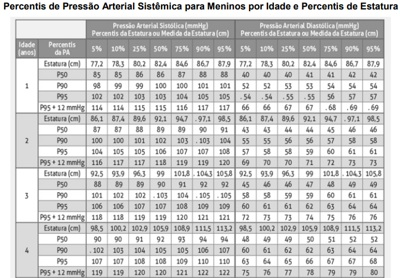
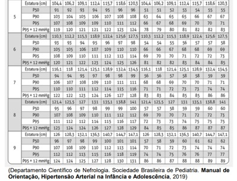
A pressão arterial elevada.
B pressão arterial normal.
C pré-hipertensão.
D hipertensão estágio II.
E hipertensão estágio I.
Questão 48 · Inf ectologia · 4000183632Criança de 7 anos foi levada à Unidade básica de Saúde, com febre há 6 dias, cefaleia, exantema e mialgia. Negava d o r abdominal intensa, vômitos ou sangramentos. Negava sonolência ou irritabilidade, negava lipotimia, hipotermia, diminuição da diurese ou desconforto respiratório. A prova do laço foi positiva. Segundo o Ministério da Saúde, a conduta mais adequada entre as propostas a seguir é:
A Encaminhamento para internação, onde será realizada a hidratação e a confirmação diagnóstica.
B Hidratação endovenosa imediata, coleta de hemograma e sorologias. Se o hematócrito estiver normal acompanhamento ambulatorial com orientação de retorno se sinais de alarme.
C Hidratação oral imediata, realização do teste rápido. Orientação dos sinais de alarme e marcação do retorno para o terceiro, quinto e sétimo dia de evolução da doença.
D Hidratação oral imediata, coleta de hemograma, teste rápido e sorologias. Se hematócrito normal, acompanhamento ambulatorial até 48 horas após a resolução da febre.
E Hidratação endovenosa imediata, coleta de hemograma e sorologias e encaminhamento do caso para internação hospitalar.
Questão 49 · Manejo Clínico · Quadro Clínico e Indicações de Tomograf ia de Crânio · Neurologia · 4000183631Escolar de 8 anos de idade, chegou ao pronto atendimento vítima de trauma crânio encefálico grave devido à queda de laje. Realizou uma tomogra a de crânio inicial sinais de instalado cateter ventricular para monitorização da pressão intracraniana (PICC) e encaminhado a unidade de terapia intensiva recebendo ventilação mecânica com parâmetros de suporte, sedação contínua com midazolam endovenoso, cabeceira em posição neutra e elevada a 30 graus. Pupilas mióticas bilateralmente. Nesse momento veri cou-se elevação da PICC. Entre as seguintes opções abaixo, a melhor conduta diante da hipertensão intracraniana nesse caso é:
A Bôlus de solução salina hipertônica.
B Fentanil contínuo.
C Cirurgia descompressiva.
D Bloqueador neuromuscular.
E Hiperventilação com CO₂ < 30 mmHg.
Questão 50 · Pediatria · Amamentação Aleitamento Materno · 4000183630Criança de 9 meses de idade, hígida, com bom desenvolvimento neuropsicomotor, está em consulta de rotina, na unidade Básica de Saúde. O peso para idade está entre o escore z 0 e +1; a estatura para idade está no escore z 0. No decorrer da consulta a criança é amamentada ao peito com o corpo longe do corpo da mãe, a cabeça e o corpo não alinhados e o corpo não sustentado. Entre as opções abaixo, a melhor conduta neste caso é:
A ajustar a pega e manter a posição da amamentação.
B não interferir na técnica de amamentação deste lactente.
C encaminhar a mãe e a criança para o grupo de amamentação.
D corrigir imediatamente a posição e pega da criança.
E ajustar a posição e explicar os sinais de boa pega.
Questão 51 · Maturação sexual · Pediatria · 4000183629Escolar do sexo feminino de 8 anos e 6 meses de idade, previamente hígida, vem para consulta de rotina na Unidade Básica de Saúde. A mãe queixa-se que a menina apresenta odor axilar há 6 meses. Nega menarca. Ao exame clínico, o médico nota a presença de pequena quantidade de pelos axilares bilateralmente; broto mamário à esquerda formando pequena saliência com elevação da mama e da papila; ausência de broto mamário à direita; ausência de pelos em região pubiana. O estadiamento puberal de Tanner para esta menina é:
A M2 P1.
B M1 P2.
C M3 P1.
D M1 P1.
E M2 P2.
Questão 52 · Síndrome de Patau · Pediatria · 4000183628Primigesta 22 anos, 36 semanas de idade gestacional, dá à luz um neonato do sexo masculino, com peso de 2.236 g e Apgar: 4/6/7. Ultrassons realizados no pré-natal indicaram arrinencefalia, cardiopatia complexa, punhos cerrados e plantas arqueadas. Ao nascimento observou-se fenda labial e palato fendido, hipotelorismo ocular, microftalmia bilateral, orelhas malformadas e de baixa implantação e criptorquidia. O diagnóstico mais provável é trissomia do cromossomo:
A 21.
B 15.
C 13.
D 7.
E 18.
Questão 53 · Hemof ilia · Hemof ilia · 4000183627João Lucas, dois anos, foi internado com história de aumento de volume do joelho esquerdo. Negava febre, perda de peso, astenia ou outras queixas clínicas. Exame físico estava normal, exceto pela presença de aumento de volume da articulação do joelho esquerdo. Realizada punção articular que demonstrou hemartrose. Mãe refere que paciente apresentou sangramento no nascimento dos dentes. Tendo em vista a principal hipótese diagnóstica, o exame laboratorial que mais provavelmente estará alterado é:
A prova do laço.
B tempo de protrombina.
C contagem de plaquetas.
D tempo de tromboplastina parcial ativada.
E tempo de sangramento.
Questão 54 · Estigmas atópicos · Dermatologia · Apresentação clínica · 4000183626João, oito anos, apresenta pele seca e áspera com prurido intenso em braços e pernas. Exame físico: lesões eczematosas com liqueni cação em regiões exurais cubital e poplítea, prega infra-orbital de Dennie Morgan e Sinal de Hertoghe presentes. O diagnóstico mais provável para este paciente é:
A dermatite de contato.
B dermatite seborreica.
C eczema numular.
D psoríase.
E dermatite atópica.
Questão 55 · Endocrinologia · 4000183625Menina de 7 anos, diabética tipo I, chegou ao pronto atendimento em cetoacidose diabética, com queixa de mal-estar há 5 horas, sem febre. Glicemia inicial: 400 mg/dL; pH sérico: 7,10 e K: 5,2 mEq/L. Recebeu inicialmente hidratação endovenosa com soro siológico, apresentando diurese abundante e clara. Iniciado então insulina endovenosa contínua, mantida hidratação com ringer lactato e iniciado reposição de potássio no soro. Após cerca de 6 horas a paciente apresenta diurese de 6 mL/kg/h, glicemia: 250 mg/dL, gasometria com pH: 7,2 e K: 3,8 mEq/L. Entre as opções abaixo, a melhor conduta nesse momento para este paciente é:
A Manter insulina endovenosa e iniciar aporte de glicose ao soro.
B Suspender oferta de potássio no soro.
C Aumentar a dose da insulina endovenosa e diminuir volume do ringer.
D Suspender insulina endovenosa e iniciar reintroduzir insulina NPH.
E Manter insulina endovenosa e iniciar dieta por via oral.
Questão 56 · Neurologia · Teste da Apneia · Morte Encef álica · 4000183624Lactente 1 ano e 5 meses de idade, apresentou sangramento de sistema nervoso central devido a má formação arteriovenosa e encontra-se em coma não perceptivo, sem reatividade supraespinhal e em apneia persistente há mais de 24 horas, na ausência de medicamentos sedativos. Os pais manifestaram o desejo realizar a doação dos órgãos do lho. Hoje foi realizado o primeiro exame clínico, sendo o mesmo compatível com coma não perceptível e ausência de função do tronco encefálico. Além do segundo exame clínico, os exames necessários para confirmação da morte encefálica são:
A um teste de apneia e dois exames complementares.
B dois testes de apneia e um exame complementar.
C um teste de apneia e um exame complementar.
D dois testes de apneia.
E dois exames complementares com técnicas diferentes.
Questão 57 · Mastoidite · Pediatria · 4000183623Pré-escolar de três anos com otalgia há cinco dias, com saída de secreção amarelada pelo orelha. Atualmente em tratamento com antibiótico tópico, retorna à emergência com dor latejante e persistente no ouvido, piora da hipoacusia e febre alta. Ao exame físico está irritada, com secreção amarelada no ouvido e protuberância atrás da orelha, muito semelhante a um caroço (foto abaixo). Entre as seguintes hipóteses diagnósticas, a mais provável é:
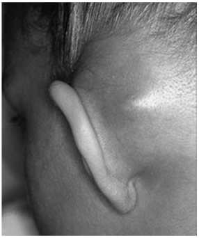
A furúnculo retroauricular.
B abcesso retroauricular.
C linfadenite retroauricular.
D celulite do pavilhão auricular.
E mastoidite aguda.
Questão 58 · Patologias Auditivas · Pediatria · 4000183622FLP, 12 anos, sexo masculino, tem brigado muito com a família por causa do volume da televisão e do aparelho de som, q ue sempre deixa muito alto. Na escola tem apresentado piora do rendimento escolar, diminuição da atenção e concentração e irritabilidade. Os professores referem que está distraído e tem di culdade de se relacionar com os colegas, preferindo permanecer mais isolado. Entre as opções abaixo, a melhor é:
A encaminhá-lo para avaliação neuropsicológica.
B encaminhá-lo para avaliação audiológica.
C iniciar metilfenidato.
D iniciar antidepressivo inibidor seletivo da recaptação de serotonina.
E dosagem de hormônios tireoidianos.
Questão 59 · Diagnóstico etiológico da hipernatremia · Nef rologia · Tratamento da Hipernatremia · 4000183621Escolar de 8 anos de idade, vítima de acidente automobilístico há 24 horas, apresenta edema cerebral por provável lesão axo nal difusa. Está internado em unidade de terapia intensiva sob ventilação mecânica. Apresentava estabilidade hemodinâmica até o momento, quando passou a apresentar diurese de 10 mL/kg/h, com densidade urinária de 1000 a 1005, PA: 85 × 45 mmHg, FC: 120 bpm, TC: 36 °C, desenvolvendo a mesma FR: 20 ipm do ventilador, saturação de oxigênio ao oxímetro: 90%. Ausculta cardiopulmonar normal. Abdome ácido sem visceromegalias. Ele recebeu então expansão volêmica com 40 mL/kg de soro siológico e iniciada norepinefrina 0,1 mcg/kg/min apresentando nova PA: 100 × 55 mmHg. Realizada glicemia capilar: 140 mg/dL e dosagem sérica de Na: 172 mEq/L e K: 4 mEq/L. Entre as opções abaixo, a melhor neste momento para este paciente é:
A Desmopressina.
B Dexametasona.
C Furosemida.
D Dobutamina.
E Vancomicina.
Questão 60 · Pediatria · Abordagem da Crise Febril · 4000183620Lactente de 10 meses, previamente hígido, chegou ao pronto atendimento trazido pelos pais por ter apresentado crise convulsiva com perda da consciência que durou cerca de 20 minutos. A Mãe informou que o lho está com coriza e tosse há uma semana. Há 2 dias iniciou quadro de febre não aferida, inapetência e um episódio de vômito hoje. A chegada o paciente apresentava T: 38,2 °C, FC: 125 bpm, FR: 40 ipm, corado, hidratado, anictérico, acianótico, choroso e irritado. Fontanela plana, em ossi cação. ORO: normal. OTO: hiperemia timpânica bilateral com triângulo luminoso presente à esquerda, opacidade à direita. Secreção nasal mucoide esbranquiçada. Ausculta cardiopulmonar normal. Abdome globoso, levemente distendido, sem visceromegalias. Perfusão periférica de 2 seg. Rigidez de nuca ausente. Entre as condutas abaixo, a melhor para este paciente é:
A Tomografia de crânio.
B Alta com sintomáticos e orientação.
C Amoxicilina oral.
D Coleta de líquor.
E Avaliação do neuropediatra.
Questão 61 · Obstetrícia · Gestação múltipla gestação gemelar · 4000183619Primigesta, gemeligesta dizigótica, 36 semanas, em trabalho de parto com 6 cm de dilatação. O primeiro feto está em AEA e o segundo em OEA. Ambos têm peso estimado ao redor de 2.600 g. Indica-se
A aguardar o parto vaginal.
B extração podálica do segundo gemelar após o nascimento do primeiro.
C amniotomia e versão interna do primeiro gemelar.
D extração podálica do primeiro gemelar.
E cesárea.
Questão 62 · Obstetrícia · Diagnóstico e datação da gestação · 4000183618Pode haver falso-positivo em teste de gravidez nos casos de:
A Hipogonadismo hipogonadotrópico, uso de contraceptivos orais.
B Redução sérica de níveis de LH, lúpus eritematoso sistêmico.
C Hipotiroidismo, uso de anticonvulsivantes.
D Gravidez ectópica abdominal, uso de benzodiazepínicos.
E Tumores ovarianos produtores de hCG, gestação acima de 25 semanas.
Questão 63 · Obstetrícia · Assistência ao parto normal · 4000183617Primigesta, 41 semanas de gestação, pré-natal sem intercorrências, chega ao pronto-socorro com queixa de dor e saída de sangue pela vagina. Ao exame, apresenta PA: 130 × 70 mmHg, altura uterina de 34 cm, BCF: 144 bpm, 4 contrações em 10 minutos. Ao exame vaginal, observa-se apresentação cefálica, bolsa íntegra, colo esvaecido 60%, dilatação cervical de 5 cm, presença de grande quantidade de muco sanguinolento. Nesse momento, deve-se internar a paciente, monitorar vitalidade fetal e
A realizar amniotomia para observar se há hemoâmnio.
B orientar a paciente que há alto risco de indicação de cesárea pelo sangramento vaginal.
C utilizar métodos de maturação do colo, como misoprostol, por exemplo.
D iniciar ocitocina para indução do parto.
E iniciar o preenchimento do partograma para aguardar a evolução do parto.
Questão 64 · Estática f etal · Bacia obstétrica e pelvimetria · Obstetrícia · 4000183616Secundigesta em trabalho de parto, com 7 cm de dilatação e bolsa rota. Na palpação abdominal, o obstetra encontra o polo cefálico na escavação, apresentação etida e conclui que se trata de ODT. Considerando a pelve como um relógio, no toque vaginal espera-se observar o
A 9h.
B 12h.
C 8h.
D 3h.
E 6h.
Questão 65 · Ginecologia · Diagnóstico · 4000183615Mulher, 43 anos de idade, IIG I parto cesáreo há 5 anos e 1 parto vaginal há 1 ano, refere bola na vagina com di culdade de esvaziamento vesical e urgência miccional desde o parto. Nega incontinência urinária e noctúria. HI: obstipada. O diagnóstico mais provável, dentre os abaixo, é
A bexiga neurogênica flácida.
B prolapso parede vaginal anterior.
C síndrome da bexiga hiperativa.
D prolapso de parede vaginal posterior.
E prolapso de cúpula vaginal.
Questão 66 · Distúrbios hipertensivos na gestação DHEG · Obstetrícia · 4000183614Primigesta de 32 anos de idade, comparece à primeira consulta de pré-natal com 15 semanas. Nega comorbidades. Referia apenas cefaleia e que se sentia bastante edemaciada desde o início da gravidez. Segundo sua informação, já havia ganhado 6 kg desde que descobriu a gravidez, há 2 meses. Durante o exame físico, observa-se PA: 150 × 100 mmHg, exame obstétrico compatível com 15 semanas, feto com batimentos cardíacos presentes. Edema +/4+ de membros inferiores. O médico realiza pesquisa de proteinúria de 24 horas, com resultado de 200 mg. É correto a rmar que se trata de
A pré-eclâmpsia leve.
B pré-eclâmpsia sobreposta.
C feocromocitoma.
D hipertensão arterial crônica.
E hipertensão gestacional.
Questão 67 · Endocrinologia reprodutiva · Ginecologia · Fisiologia do ciclo menstrual · 4000183613No ciclo menstrual normal,
A o corpo lúteo é formado pelas células da teca interna estimuladas pelo pico de LH e de progesterona.
B o pico do estradiol na fase folicular desencadeia o pico de LH e a ovulação ocorre após cerca de 12 horas.
C as células da granulosa são responsáveis pela transformação do colesterol em estrogênios pelo estímulo direto do FSH.
D o FSH estimula as células da teca interna, que determinam o aumento do LH e consequente ovulação em cerca de 36 horas.
E o estrogênio produzido pelas células da teca externa induz a produção de progesterona pelas células da teca interna, caracterizando a teoria das duas células.
Questão 68 · Ginecologia · Fisiologia da micção · 4000183612Para que haja correto esvaziamento vesical, é necessário haver
A coordenação entre o sistema esfincteriano uretral e o detrusor, mediados pelo sistema nervoso somático.
B ação sincrônica do nervo pudendo e do sistema nervoso simpático, ambos causando relaxamento do assoalho pélvico.
C estímulo alfa-adrenérgico sobre a base da bexiga e assoalho pélvico, levando à abertura do colo vesical e saída da urina.
D contração do detrusor mediada por ação colinérgica e relaxamento do assoalho pélvico para abertura do colo vesical.
E integridade do centro sacral da micção, bloqueando os estímulos negativos de contração vesical enviados pelo córtex.
Questão 69 · Tratamento · 4000183611Paciente de 32 anos de idade com queixa de uxo menstrual abundante há 1 ano. Já usou medicação hormonal e ácido tranexâmico, com melhora parcial. Tem desejo de gravidez. Ao exame, apresenta útero aumentado 1 vez, endurecido e móvel. A ultrassonogra a mostra formação hipoecoica na parede uterina direita, abaulando o endométrio, medindo 7 cm de diâmetro com componente subseroso. O quadro clínico sugere a indicação de
A análogos de GnRH por 1 ano e tentativa de gravidez espontânea logo após esse período.
B histeroscopia com ablação endometrial e laparoscopia para ressecção do componente subseroso.
C miomectomia por via abdominal ou laparoscópica ou robótica.
D histeroscopia com ressecção do nódulo com alça bipolar.
E progestagênio contínuo por 6 meses e reavaliação do nódulo logo após esse período.
Questão 70 · Ginecologia · Tratamento · 4000183610Paciente de 20 anos de idade, nuligesta, refere dor e sangramento ao coito há cerca de 2 meses. Não faz uso de métodos contraceptivos hormonais, mas refere coito interrompido. Sua última menstruação ocorreu há 15 dias. Ao exame ginecológico, observa-se conteúdo vaginal, amarelo, sem odor. O colo uterino apresenta aspecto inflamatório, facilmente sangrante, JEC −3 e muco endocervical com aspecto purulento. Nesse momento, indica-se
A prescrever doxaciclina.
B prescrever itraconazol.
C realizar cirurgia de alta frequência com exérese de zona 1.
D cauterizar o colo com ácido acético.
E biopsiar a JEC e o canal endocervical.
Questão 71 · Diagnóstico · Psiquiatria · 4000183609Para o correto diagnóstico de transtorno disfórico pré-menstrual, é necessária a presença de 5 ou mais sintomas somáticos e/ou emocionais, na maioria dos ciclos menstruais, na última semana da fase lútea,
A em mulheres com menos de 45 anos de idade.
B incluindo pelo menos um dos seguintes: humor deprimido, ansiedade, irritabilidade ou raiva.
C que melhoram acentuadamente no final da fase ovulatória.
D associados a diminuição importante dos valores da relação FSH/LH.
E em mulheres que não utilizam anticoncepcionais hormonais.
Questão 72 · Obstetrícia · Placenta prévia PP · 4000183608São os principais fatores de risco para placenta prévia:
A Cesárea prévia, trabalho de parto prematuro, gemelaridade.
B Miomectomia, macrossomia, diabetes gestacional.
C Intervalo interpartal curto, amniorrexe prematura, tabagismo.
D Multiparidade, gemelaridade, oligoâmnio.
E Cesárea prévia, miomectomia, tabagismo.
Questão 73 · Síndrome dos ovários policísticos · 4000183607É androgênio produzido apenas por conversão periférica e que tem importante ação tissular em mulheres com hirsutismo:
A Sulfato de dehidroepiandrosterona.
B Dehidroepiandrosterona.
C Di-hidrotestosterona.
D Testosterona.
E Androstenediona.
Questão 74 · Inf ectologia · 4000183606Recomenda-se realizar teste sorológico para a sífilis
A a cada 6 meses em pessoas em uso de PrEP.
B a cada 6 meses em adolescentes.
C a cada 3 meses em pessoas vivendo com HIV.
D anualmente em usuários de drogas ou pessoas privadas de liberdade.
E anualmente em jovens até 30 anos de idade com vida sexual ativa.
Questão 75 · Obstetrícia · Mecanismo de parto · 4000183605Em relação ao mecanismo de parto é correto afirmar que:
A Na apresentação cefálica fletida o ponto de referência é o bregma, com o símbolo B.
B Na apresentação pélvica a linha de orientação é o dorso e o ponto de referência é o quadril.
C A descida fetal é mais acelerada na fase de desaceleração da dilatação cervical.
D A fase latente do parto é representada pela dilatação cervical de 1,2 cm/hora a 1,5 cm/hora.
E A posição fetal representa a parte fetal que ocupa o estreito superior da pelve materna.
Questão 76 · Quadro clínico · 4000183604Mulher, 32 anos de idade, apresenta dor cíclica no período menstrual há 2 anos, sem melhora com analgésicos, anti- inflamatórios e contraceptivos hormonais. É obstipada. Teve cistite bacteriana há 3 meses e trouxe uma ultrassonogra a pélvica com descrição de nódulo uterino medindo 25 mm intramural e cisto ovariano a direita com conteúdo hemático medindo 40 mm. A principal causa de dor é:
A Estiramento de fibras nervosas por obstipação intestinal.
B Doença inflamatória pélvica crônica.
C Degeneração rubra de mioma uterino.
D Sangramento focal de implantes endometrióticos.
E Infeção do trato urinário complicada.
Questão 77 · Inf ecção Urinária e Bacteriúria Assintomática na gestação ITU · Obstetrícia · 4000183603Primigesta, 29 anos, apresentou pielonefrite no primeiro trimestre ocasionada por acompanhamento pré-natal é
A realização de ressonância magnética das vias urinárias.
B antibioticoprofilaxia diária ao longo do pré-natal.
C prescrição de composto a base de
D ingesta adequada de líquido e micção a cada 6 horas.
E realização de urina I e urocultura em cada trimestre.
Questão 78 · Obstetrícia · Terceiro periodo dequitação · 4000183602No terceiro período de parto,
A a conduta ativa envolve o uso rotineiro de substâncias uterotônicas.
B deve-se aguardar 5 minutos após o nascimento para a secção do cordão umbilical.
C deve-se administrar ocitocina somente após pinçar e seccionar o cordão.
D a conduta ativa está mais associada a hemorragia do que a conduta fisiológica.
E 1 hora após o nascimento é considerado terceiro período prolongado.
Questão 79 · Obstetrícia · Hepatites na gestação · 4000183601Primigesta, 38 anos de idade, encontra-se no primeiro trimestre de gestação e cou assustada com os exames laboratoriais: Anti HVA positivo, Anti-HbS positivo, HBsAg negativo, Anti-HbcIgM negativo, anti-HBc total positivo. O diagnóstico, nesse caso, é
A infecção por hepatite B pregressa e resolvida.
B infecção aguda por hepatite A.
C infecção aguda por hepatite B.
D infecção crônica por hepatite B.
E imunidades adquiridas por vacinação.
Questão 80 · Ultrassonograf ia no primeiro trimestre · Obstetrícia · 4000183600Considere a imagem abaixo. Nessa imagem ultrassonográfica do final do primeiro trimestre de gestação observa-se feto com
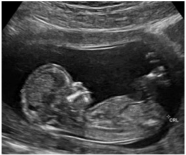
A ausência do osso nasal e pé torto congênito.
B osso nasal adequado e anencefalia.
C ausência de osso nasal e aumento da transluscência nucal.
D osso nasal e transluscência nucal adequados.
E higroma cístico e edema da calota craniana.
Questão 81 · Rastreamento do câncer de mama · 4000183599Sobre os exames de mamas:
A A sensibilidade da ressonância magnética das mamas é maior do que o da mamografia, porém a especificidade é menor.
B A dopplerfluxometria das mamas tem como vantagem a sensibilidade maior que a ultrassonografia e ter boa reprodutibilidade.
C A ultrassonografia das mamas tem achados comparáveis com a mamografia com a vantagem de não ter radioexposição.
D A mamografia tem baixo custo e boa acurácia, porém depende da densidade mamária para boa interpretação.
E O melhor exame para avaliação de nódulos palpáveis é a ressonância magnética das mamas, por não ter radioexposição.
Questão 82 · Medicina Preventiva · 4000183598Menina de 15 anos de idade procura a UBS para atendimento ginecológico. Na consulta, informa ao médico que deseja método contraceptivo, mas que seus pais não estão cientes que ela já iniciou a vida sexual. O médico pode
A solicitar a presença de um responsável maior de idade para iniciar o atendimento ginecológico.
B solicitar a presença do parceiro para orientação sexual e contraceptiva antes de prescrever qualquer método.
C prescrever métodos reversíveis, mas não métodos de longa ação, como DIU.
D esclarecer a paciente sobre os diversos métodos e somente prescrevê-los na presença de um responsável.
E esclarecer a paciente sobre os diversos métodos e prescrever o que for mais adequado.
Revisar: possível letra faltando em enunciado
Questão 83 · Obstetrícia · COVID na gestação · 4000183597Tercigesta, 2 partos normais anteriores, encontra-se na 33ª semana de gestação, quando iniciou sintomas gripais (tosse, dor d e garganta e coriza) acompanhada de febre há 1 dia. Está realizando pré-natal adequadamente e tem diagnóstico de diabetes gestacional controlada com dieta e exercício. Procurou o serviço de saúde onde se diagnosticou Covid-19. Nesse caso, é correto afirmar:
A A diabetes é fator de risco para complicações devendo-se ultimar o parto até a 34ª semana.
B Existe maior risco de polidrâmnio nas gestantes internadas por Covid-19.
C O quadro é considerado leve pois não há queixas de dispneia e a orientação é tratamento domiciliar.
D Para evitar sofrimento fetal é fundamental garantir a saturação de O₂ acima de 92%.
E Se a frequência respiratória for maior que 24 rpm será considerado síndrome respiratória aguda grave.
Questão 84 · Hematologia · Obstetrícia · 4000183596É considerado fator de alto risco para tromboembolismo (TEV) na hospitalização de gestantes e puérperas:
A TEV prévio em uso de hormônios.
B Obesidade mórbida.
C Deficiência de proteína S.
D Tabagismo > 10 cigarros/dia.
E Pré-eclâmpia grave.
Questão 85 · Inf ectologia · 4000183595De acordo com a Sociedade Brasileira de Cardiologia, as vacinas contra Covid-19
A induzem trombose da veia cerebral em taxa superior àquela observada em pacientes hospitalizados com Covid- 19.
B são contraindicadas em indivíduos com história prévia de tromboembolismo venoso, com base em evidências de metanálises.
C não são seguras para pacientes cardíacos e seus benefícios não superam os riscos de efeitos adversos relacionados.
D têm como principais efeitos adversos cardiovasculares a trombose com trombocitopenia imune e a miocardite.
E que utilizam vetor de adenovírus causam miocardite em adultos idosos.
Questão 86 · Sif ilis na gestação · Obstetrícia · 4000183594Gestante de 26 anos, idade gestacional 14 semanas, assintomática, realiza teste rápido para sí lis em sua primeira consulta de pré-natal e o teste é positivo. Entre as opções abaixo, a melhor conduta para este caso é tratamento com Penicilina benzatina
A 2.400.000 UI em aplicação com intervalo de 1 semana, por 3 semanas (7.200.000 UI no total). Convocação dos parceiros sexuais para testagem e tratamento igual, caso o teste seja positivo.
B Coleta de teste treponêmico da gestante e tratamento imediato com Penicilina benzatina 2.400.000 UI em aplicação com intervalo de 1 semana, por 2 semanas (4.800.000 UI no total). Convocação dos parceiros sexuais para testagem e tratamento igual, caso o teste seja positivo.
C 2.400.000 UI em aplicação com intervalo de 1 semana, por 3 semanas (7.200.000 UI no total). Convocação dos parceiros sexuais para testagem e tratamento.
D 2.400.000 UI em aplicação com intervalo de 1 semana, por 2 semanas (4.800.000 UI no total). Convocação dos parceiros sexuais para testagem e tratamento.
E 1.200.000 UI em aplicação com intervalo de 1 semana, por 3 semanas (3.600.000 UI no total) Convocação dos parceiros sexuais para testagem e tratamento.
Questão 87 · Estratif icação do risco cardiovascular global e metas terapêuticas · Cardiologia · 4000183593Mulher de 57 anos, em tratamento de é tabagista, pratica musculação 2 vezes por semana e caminhada 5 vezes por semana desde que soube do diagnóstico. Antecedentes familiares – mãe e irmã com DM2, sem doenças cardiovasculares graves ou câncer. Está assintomática. IMC: 24. PA: 110 × 70. Hb glicada: 6,8. Creatinina: 0,70. Microalbuminúria: 5 mg/g. Colesterol total: 186. HDL: 60. Triglicérides (TGD):135. O risco cardiovascular (RCV) desta paciente de acordo com a Diretriz Brasileira de Dislipidemias de 2017 é:
A RCV alto devido ao histórico familiar, idade e valor da microalbuminúria.
B RCV intermediário devido ao diagnóstico DM2 recente, valor do HDL e Hb glicada.
C RCV muito alto devido ao diagnóstico de DM2, histórico familiar e valor de TGD.
D RCV intermediário devido ao tempo de evolução do diabetes e valor do LDL.
E RCV alto devido a idade e diagnóstico de DM2.
Questão 88 · Ginecologia · 4000183592Na APS é frequente a queixa de corrimento vaginal nas mulheres durante a menacme. Entre as opções abaixo, a que correlaciona sintomas, o exame físico e o tratamento corretamente é:
A Corrimento branco e prurido vaginal intenso. Especular mostra placas brancas recobrindo partes da parede vaginal e colo e secreção branca espessa. Fluconazol 150 mg, via oral, 1 × semana, por 6 meses.
B Corrimento branco ou amarelado, com odor fétido e piora após relações sexuais. Exame especular mostra grande quantidade de secreção fluida branca, com bolhas. Metronidazol 100 mg/g em gel – aplicação intravaginal por 5 noites.
C Corrimento amarelado em pequena quantidade, intermitente, fétido. Exame especular mostra secreção fluida amarelada, sem lesões mucosas. Miconazol 2% creme, via vaginal, por 7 noites.
D Corrimento de aspecto mucoso, transparente ou esbranquiçado, piora no meio do ciclo menstrual. Exame especular mostra vulva, vagina e colo do útero sem alterações, pequena quantidade de muco claro. Nistatina 100.000 UI, via vaginal, por 14 noites.
E Corrimento amarelo-esverdeado, em grande quantidade. Exame especular mostra eritema de mucosa vaginal e pericervical associado a secreção amarelada em grande quantidade com bolhas. Metronidazol 100 mg/g em gel – aplicação intravaginal por 14 noites.
Questão 89 · Indicação · 4000183591A partir de 2019, várias crianças de 6 meses de idade receberam a vacina Tríplice Viral (contra o sarampo, a caxumba e a rubéola) em campanhas nacionais ou em operações de bloqueio, para o controle do recrudescimento do sarampo no Brasil. Entre as opções abaixo, a melhor conduta recomendada pelo Ministério da Saúde, para estas crianças, a m de manter alto o grau de imunidade da população é
A antecipar o reforço para 12 meses.
B antecipar a dose da vacina para 9 meses e aplicar o reforço aos 12 meses.
C manter a dose da vacina dos 12 meses e o reforço aos 15 meses.
D não vacinar aos 12 meses e manter o reforço aos 15 meses.
E fazer a sorologia e vacinar se houver baixos níveis de anticorpos.
Questão 90 · Papilomavírus humano HPV · 4000183590Uma paciente de 29 anos, tabagista, em relação monogâmica com parceiro xo, em uso de contraceptivo oral, apresenta resultado positivo para infecção cervical pelo vírus do papiloma humano (HPV). Pode-se afirmar que
A há risco de câncer do colo do útero se infecção persistente pelos subtipos HPV-16 e HPV-18.
B caso não seja tratada em até 6 meses apresentará alto risco de desenvolvimento de lesões percussoras.
C a relação monogâmica e uso de contraceptivo são fatores contra o desenvolvimento de câncer de colo uterino.
D a infecção cervical pelo HPV é permanente e, raramente, regride, espontaneamente.
E o tabagismo não é um fator de risco para o desenvolvimento de câncer de colo uterino.
Questão 91 · Medicina Preventiva · 4000183589Para o número de fraturas, diagnosticadas por exames de imagem, na cidade de Ribeirão Preto, um médico traçou o seguinte Gráfico Polar: Os dados que estão representados no Gráfico, servem melhor para um estudo de
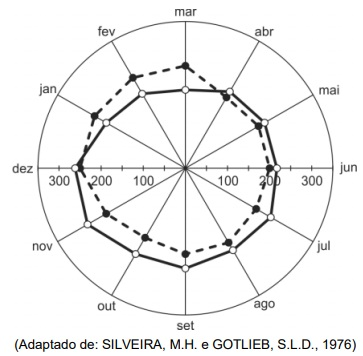
A Sazonalidade.
B Especificidade.
C Sensibilidade.
D Incidência.
E Prevalência.
Questão 92 · Medicina Preventiva · 4000183588Em relação ao Plano de Ações Estratégicas para o Enfrentamento das Doenças Crônicas e Agravos não Transmissíveis no Brasil 2021-2030, do Ministério da Saúde, é correto afirmar:
A A prevalência de tabagismo manteve-se estável entre 2010 a 2019 e a meta de redução da prevalência de tabagismo em 30% não foi atingida no período.
B A cobertura de mamografia em mulheres de 50 a 69 anos, apresentou redução significativa, de 2010 a 2019.
C Os agravos não transmissíveis (violências e acidentes), cresceram entre 2010 e 2019, chegando a ser causa de cerca de 40% dos óbitos registrados no Brasil.
D As doenças cardiovasculares, cânceres, diabetes e doenças respiratórias crônicas, são causadas por fatores genéticos e pouco relacionados às condições de vida dos pacientes.
E As doenças e agravos não transmissíveis, em 2019, eram os responsáveis por mais da metade do total de mortes no Brasil.
Questão 93 · Medicina Preventiva · 4000183587Um programa de rastreamento organizado, para um câncer frequente em determinada população, será implantado em um serviço de saúde. Nesse contexto, o exame escolhido deve
A ter alta especificidade.
B ter alto valor preditivo positivo.
C ser compulsório para a população sob risco.
D ser oportunístico, pelo melhor custo-efetivo.
E priorizar pessoas que apresentam sinais e sintomas suspeitos da doença.
Questão 94 · Medicina Preventiva · 4000183586Uma população de dez comunidades escolares foi selecionada para um programa de prevenção de violência doméstica. Cada comunidade, denominadas por letras de A a J, tem certo número de indivíduos, desejando-se uma amostra de tamanho igual a 5 comunidades. A amostragem será NÃO probabilística se for
A estratificada por idade ou por gênero.
B por conglomerados representados por bairros da cidade.
C decidido escolher as comunidades A, B, C, I, J.
D realizado sorteio com cada comunidade tendo probabilidade de ser sorteada, proporcionalmente, ao seu número de indivíduos.
E realizado sorteio das comunidades no qual estas voltam ao sorteio, podendo ser novamente sorteadas.
Questão 95 · Origem · Mecanismos de inf ecção · 4000183585Na abordagem clínica das diarreias agudas é certo que
A o tempo decorrido entre a diarreia e a ingestão de alimentos não se presta à suspeita da etiologia.
B 90% são causadas por etiologias infecciosas.
C creches são locais comuns para transmissão de
D a presença de sangue nas fezes, exclui etiologia bacteriana.
E a minoria tem etiologia viral e não são autolimitadas.
Questão 96 · Medicina Preventiva · 4000183584Considere o seguinte desenho sobre um novo medicamento para alívio de cefaleia (efeito). O tipo de ensaio que melhor está representado no desenho é:

A caso-controle.
B coorte prospectivo.
C ensaio clínico randomizado.
D ecológico.
E observacional prospectivo.
Questão 97 · Medicina Preventiva · 4000183583Um estudo teve como objetivo verificar se a participação na Estratégia Saúde da Família (ESF), reduzia o percentual de crianças com esquema vacinal básico incompleto, no primeiro ano de vida. O resultado foi que os participantes da ESF apresentaram percentual 10% maior, de vacinação infantil incompleta, do que os não participantes. Nesse cenário, é correto afirmar que
A há evidência de viés de seleção, quando se definiu participação na ESF como variável.
B um forte viés de mensuração prejudicou a qualidade do estudo, levando à relação incorreta causa-efeito.
C a estimativa de associação deve ser interpretada em termos causais.
D as variáveis confundidoras, como renda familiar per capita, podem ter ocorrido.
E a escolaridade da mãe não pode ser uma variável confundidora.
Questão 98 · Medicina Preventiva · 4000183582O rastreamento de distúrbios lipídicos em adultos a partir dos 20 anos de idade que tenham risco aumentado de doenças cardiovasculares, tem grau de recomendação B. Isto significa que
A há grande certeza que o benefício líquido da intervenção é moderado.
B há incerteza quanto ao saldo de benefícios e danos.
C as evidências são insuficientes para recomendar o rastreamento nessa população.
D há grande certeza que a intervenção oferece um benefício líquido substancial.
E o rastreamento deve ser desestimulado nessa população.
Questão 99 · Medicina Preventiva · 4000183581O Ministério da Saúde consolidou as noti cações das hepatites A, B, C e D, com objetivo de contribuir para as tomadas de decisões e definições de estratégias de enfrentamento, sendo que no Brasil, de 2000 a 2021,
A foram notificados mais de 700 mil casos confirmados de hepatites virais.
B as hepatites A e D são as principais causas de doença hepática crônica, cirrose hepática e carcinoma hepatocelular.
C em todos os casos, as notificações de casos representaram aumento nos últimos anos.
D o número de casos de hepatite A foi superior aos de hepatite B e de hepatite C.
E os óbitos por hepatite B são a maior causa de morte entre as hepatites virais.
Questão 100 · Calendário dos adolescentes · 4000183580Um esquema e recomendação no calendário nacional de vacinação (Ministério da Saúde, 2022) é vacinar adolescentes contra Respostas: 1 12 23 34 45 56 67 78 89 100
A meningite meningocócica C, para não vacinados, em 3 doses.
B dengue recomendada para imunodeprimido, gestantes e nutrizes.
C influenza em esquema de três doses (0-3-6 meses).
D difteria, tétano e coqueluche, para aqueles sem esquema de vacinação completa.
E HPV, aqueles com idade 15 anos e não imunizados anteriormente.